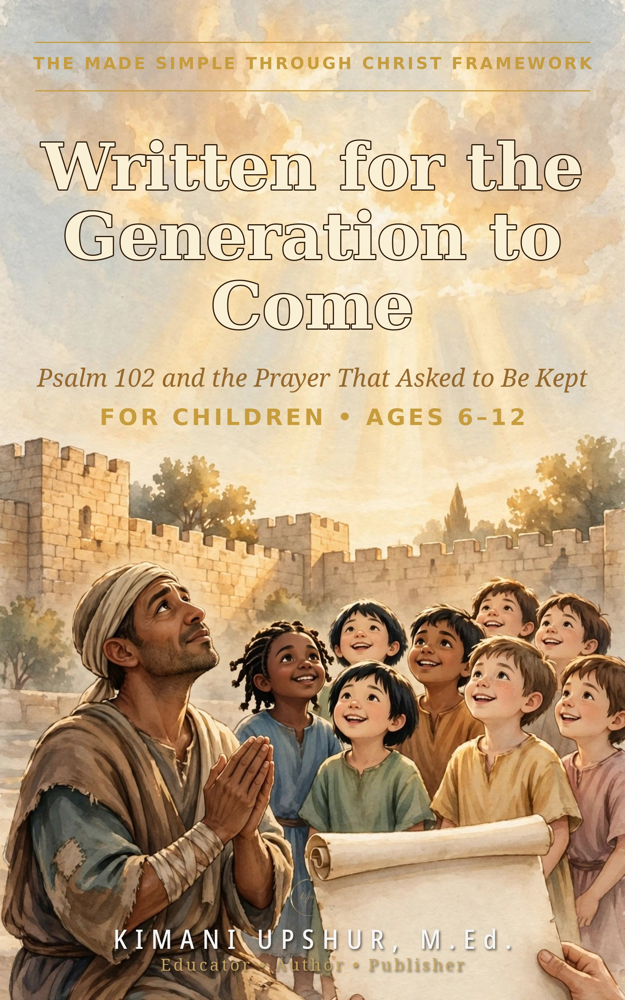

Home / Kids & Teens / Children

Written for the Generation to Come
Psalm 102 and the Prayer That Asked to Be Kept
by Kimani Upshur, M.Ed.
Some psalms begin with singing. This one begins with a sufferer who would not dress his prayer up — and Written for the Generation to Come: Psalm 102 and the Prayer That Asked to Be Kept walks through Psalm 102:12–22 in order, across ten chapters, carrying the psalm's opening overwhelm (verses 1–11) in honest summary.
Some psalms begin with singing. This one begins with a sufferer who would not dress his prayer up — and Written for the Generation to Come: Psalm 102 and the Prayer That Asked to Be Kept walks through Psalm 102:12–22 in order, across ten chapters, carrying the psalm's opening overwhelm (verses 1–11) in honest summary. The afflicted man — worn down, groaning, his days thinning like an evening shadow — pours the whole truth out before the LORD, and a complaint poured out before God is still a prayer: overwhelmed is not the same as unbelieving. Then, before any answer has arrived, he does something astonishing. He stops asking only about his own days and begins to think about yours: "But thou, O LORD, shalt endure for ever; and thy remembrance unto all generations." He believes the set time to favour Zion will come, that the LORD will build her up and appear in His glory, and above all that "He will regard the prayer of the destitute, and not despise their prayer." So he asks for the forward-looking wonder at the psalm's heart: "This shall be written for the generation to come: and the people which shall be created shall praise the LORD." The book tells its reader plainly — you are that generation — and holds its fences: keeping a record of God's faithfulness is witness, never a technique for getting answers; no prosperity implication stands; and the overwhelmed reader is the psalm's own voice, met with regard, never condemned. Every chapter ends with a Do and a Pray to share together. Every Scripture quotation is word-for-word from the King James Version (KJV). The book closes with a special invitation for children to give their lives to Jesus. For older children ages 9-12.
Written from a Christian worldview — Scripture first.
- Publisher
- Upshur Unlimited, LLC
- Author
- Kimani Upshur, M.Ed.
- Format
- Ebook
- List Price
- $4.99 USD
- Language
- English
- Audience
- For Children • Ages 6–12
More Children's Books
Explore the full collection of books for children's.